역기획서 · 아이템
재료 63종
Item_Scriptable 63건, 모두 type=M(재료). 등급 분포 C 16, R 13, E 13, RD 21. 재료마다 드랍 확률(Item_Chance)과 드랍 몬스터 목록(Monster_Name)이 있습니다.


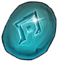
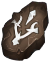

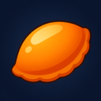
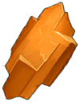
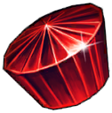
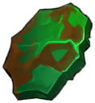
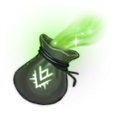
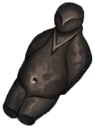
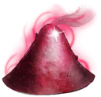
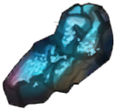
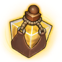
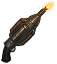
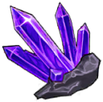

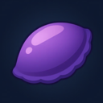
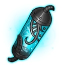
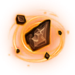
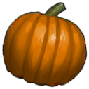
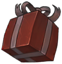
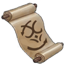
재료 전체 표
| 재료 | 번호 | 등급 | 드랍 확률 | 드랍 몬스터 | 제작 재료로 쓰는 장비 수(정상 참조) | 강화 재료로 쓰는 장비 수 | 설명 | |
|---|---|---|---|---|---|---|---|---|
| 가죽 | 0 | C | 90 | 카카, 미노 | 5 | 0 | 몬스터가 죽고 남긴 가죽 |
| 나무조각 | 1 | C | 90 | 카카, 미노, 탈리 | 0 | 0 | 무기에서 떨어진 나무조각 |
| 뼈 | 2 | C | 90 | 켈톤, 아처켈톤, 강화켈톤, 강화아처켈톤 | 0 | 0 | 부셔진 몸에서 나온 뼈 |
| 못 | 3 | C | 90 | 켈톤, 골렘, 강화켈톤 | 0 | 0 | 부셔진 무기에서 나온 못 |
| 송곳니 | 7 | C | 90 | 렛, 울프 | 0 | 0 | 적을 사냥하기 위해 쓰던 이빨 |
| 실타래 | 13 | C | 90 | 울프 | 0 | 0 | 뜯어낸 털을 모아서 만든 털뭉치 |
| 바늘 | 14 | C | 90 | 캣피쉬 | 0 | 0 | 입속에서 발견될 바늘 |
| 하얀 송편 | 41 | C | 0 | - | 0 | 0 | 추석 이벤트 아이템 |
| 사탕 | 47 | C | 49 | 펌킨 | 0 | 0 | 할로윈 전용 사탕 |
| 딸기 | 53 | C | 5 | 산타 | 0 | 0 | 크리스마스 전용 딸기 |
| 우유 | 54 | C | 20 | 산타 | 0 | 0 | 크리스마스 전용 우유 |
| 초코 | 55 | C | 75 | 산타 | 0 | 0 | 크리스마스 전용 초코 |
| 낡은 주머니 | 56 | C | 75 | 토끼 | 0 | 0 | 낡아버린 주머니다 |
| 비단 | 57 | C | 25 | 토끼 | 0 | 0 | 고운 비단 |
| 새해의 정기 | 58 | C | 5 | 토끼 | 0 | 0 | 떠오르는 새해의 정기 |
| 26한가위 하얀 송편 | 59 | C | 0 | - | 0 | 0 | 2026 추석 이벤트 아이템 |
| 해골 | 4 | R | 40 | 켈톤, 아처켈톤, 라바, 킹켈톤, 강화켈톤, 강화아처켈톤 | 0 | 0 | 죽고 남은 전리품 |
| 검 손잡이 | 5 | R | 40 | 카카, 브라하, 트로거, 레오딘, 강화레오딘 | 0 | 0 | 죽고 남은 전리품 |
| 고철 | 8 | R | 40 | 렛, 미노, 카라푸스, 골렘, 쉐로우 | 0 | 0 | 훔쳐왔던 고철 |
| 비늘 | 9 | R | 40 | 캣피쉬, 실프워커 | 1 | 0 | 꽤 단단해 보이는 비늘 |
| 금속 판 | 10 | R | 40 | 탈리, 라바 | 1 | 0 | 꽤 단단해보이는 금속 판 |
| 하급 제작서 | 11 | R | 40 | 탈리, 우르스, 레오딘, 강화레오딘 | 1 | 0 | 간단한 제작들이 적혀있다 |
| 고급스틱 | 12 | R | 40 | 아처켈톤, 바포메트, 쉐로우, 강화아처켈톤, 강화바포메트 | 0 | 0 | 잘 다져진 고급 재료 |
| 은 조각 | 15 | R | 40 | 캣피쉬, 바포메트, 칼리탄, 스톤, 데몬, 강화바포메트, 강화데몬 | 0 | 0 | 악세사리를 만들때 유용 할 거 같다 |
| 반지조각 | 16 | R | 40 | 울프, 실프워커, 데몬, 강화데몬 | 0 | 0 | 악세사리를 만들때 유용 할 거 같다 |
| 망치 | 18 | R | 40 | 골렘, 킹켈톤, 라바, 렛, 트로거, 로어드, 킹쉐로우, 서큐버스, 킹가디언, 가디언, 강화가디언 | 0 | 46 | 장비를 제작 할 때 쓰는 도구 |
| 파란 송편 | 42 | R | 0 | - | 0 | 0 | 추석 이벤트 아이템 |
| 젤리 | 48 | R | 35 | 펌킨 | 0 | 0 | 할로윈 전용 젤리 |
| 26한가위 파란 송편 | 60 | R | 0 | - | 0 | 0 | 2026 추석 이벤트 아이템 |
| 금 조각 | 17 | E | 4 | 골렘, 카라푸스, 칼리탄, 스톤, 가디언, 강화가디언 | 0 | 0 | 모든 장비에 잘 쓰일 거 같다 |
| 모루 | 19 | E | 12 | 킹켈톤, 우르스, 실프워커, 라바, 브라하, 칼리탄, 트로거, 로어드, 데몬, 서큐버스, 가디언, 킹가디언, 강화데몬, 강화가디언 | 0 | 0 | 고급 장비를 제작하기 위한 장비 |
| 최상급 스틱 | 20 | E | 12 | 우르스, 킹켈톤, 칼리탄, 레오딘, 킹쉐로우, 강화레오딘 | 1 | 0 | 고급 장비를 제작하기 위한 재료 |
| 고급 제작서 | 21 | E | 12 | 우르스, 바포메트, 브라하, 트로거, 레오딘, 로어드, 쉐로우, 킹쉐로우, 서큐버스, 킹가디언, 강화바포메트, 강화레오딘 | 4 | 0 | 고급 장비를 제작하는 방법이 적혀있다 |
| 플레어 스톤 | 22 | E | 12 | 카라푸스, 스톤 | 0 | 0 | 장비에 힘을 깃들게 하는 스톤 |
| 서광 섬유 | 23 | E | 12 | 카라푸스, 쉐로우, 데몬, 가디언, 강화데몬, 강화가디언 | 1 | 0 | 새벽 서리의 빛에서 만들어진 섬유 |
| 루나 스톤 | 24 | E | 12 | 바포메트, 스톤, 강화바포메트 | 0 | 0 | 어둠 속에서 부드럽게 빛나는 스톤 |
| 실프 스톤 | 25 | E | 12 | 실프워커 | 0 | 0 | 물속의 고요함이 깃든 스톤 | |
| 정수 조각 | 26 | E | 4 | 미노, 킹켈톤, 브라하, 트로거, 로어드, 킹쉐로우, 서큐버스, 킹가디언 | 0 | 0 | 정수에 각인을 할 수 있다 | |
| 마법서 | 39 | E | 0 | - | 2 | 0 | 마법의 지식이 담긴 책 |
| 주황 송편 | 43 | E | 0 | - | 0 | 0 | 추석 이벤트 아이템 | |
| 호박 조각 | 49 | E | 12 | 펌킨 | 0 | 0 | 할로윈 전용 호박각 조각 | |
| 26한가위 주황 송편 | 61 | E | 0 | - | 0 | 0 | 2026 추석 이벤트 아이템 | |
| 회복 각인 | 6 | RD | 1.5 | 킹켈톤 | 0 | 0 | 정수의 조각에 각인을 할 수 있다 | |
| 라바 스톤 | 27 | RD | 0.5 | 라바 | 0 | 0 | 용암 속에서 강인하게 빛나는 스톤 | |
| 흡수 각인 | 28 | RD | 1.5 | 브라하 | 0 | 0 | 정수의 조각에 각인을 할 수 있다 | |
| 녹수정 | 29 | RD | 0.45 | 칼리탄 | 0 | 0 | 자연에서 얻은 신비한 수정 | |
| 헌터 각인 | 30 | RD | 1 | 트로거 | 0 | 0 | 헌터의 힘이 담긴 각인 | |
| 봉인석 | 31 | RD | 0.35 | 레오딘, 강화레오딘 | 0 | 0 | 고대 광전사의 힘이 깃들어있다 | |
| 워리어 각인 | 32 | RD | 1 | 로어드 | 0 | 0 | 워리어의 힘이 담긴 각인 | |
| 청연석 | 33 | RD | 0.35 | 쉐로우 | 1 | 0 | 하늘빛 물안개가 응결되어 만들어진 신비한 결정 | |
| 어쌔신 각인 | 34 | RD | 1 | 킹쉐로우 | 0 | 0 | 어쌔신의 힘이 담긴 각인 | |
| 성수 | 35 | RD | 0.4 | 스톤 | 0 | 0 | 천상의 축복이 깃든 성스러운 물 | |
| 용접기 | 36 | RD | 0.15 | 칼리탄, 레오딘, 쉐로우, 데몬, 가디언, 강화레오딘, 강화데몬, 강화가디언 | 0 | 0 | 소환 , 모든 레전더리 몬스터에서 획득 가능 | |
| 차원석 | 37 | RD | 0.35 | 데몬, 강화데몬 | 0 | 0 | 다른 차원에서 발견된 광물 | |
| 메이지 각인 | 38 | RD | 1 | 서큐버스 | 0 | 0 | 다른 차원에서 발견된 광물 | |
| 최상급 마법서 | 40 | RD | 0 | - | 2 | 0 | 최상의 마법 지식이 담긴 책 |
| 보라 송편 | 44 | RD | 0 | - | 0 | 0 | 추석 이벤트 아이템 | |
| 마력핵 | 45 | RD | 0.35 | 가디언, 강화가디언 | 0 | 0 | 거대한 마력이 담겨있다 | |
| 팔라딘 각인 | 46 | RD | 1 | 킹가디언 | 0 | 0 | 팔라딘의 힘이 담긴 각인 | |
| 호박 | 50 | RD | 3.5 | 펌킨 | 0 | 0 | 할로윈 전용 호박 | |
| 펌킨의 상자 | 51 | RD | 0.5 | 펌킨 | 0 | 0 | 할로윈 이벤트 상자 | |
| 시련의 증표 | 52 | RD | 0 | - | 0 | 0 | 시련을 통과한 증표 | |
| 26한가위 보라 송편 | 62 | RD | 0 | - | 0 | 0 | 2026 추석 이벤트 아이템 |
제작 재료 사용 수는 참조가 정상인 6종 장비만 세었습니다. 1.14 빌드의 장비 128종은 재료 참조가 깨져 있어 실제 사용처가 이 표보다 훨씬 많습니다(1.13.14 기준은 변경 페이지).